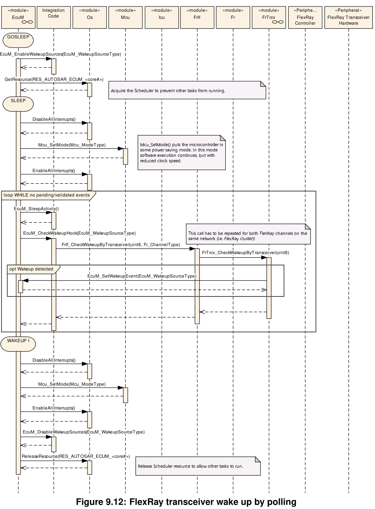

Sequence Charts
Sequence Charts¶
GPT Wakeup Sequences¶
通用计时器 （GPT） 是可能的唤醒源之一。通常，GPT 在 ECU 进入睡眠状态之前启动，硬件计时器在到期时会导致中断。中断唤醒微控制器，并在 GPT 模块中执行中断处理程序。它通知 ECU 状态管理器模块发生了 GPT 唤醒。为了区分导致唤醒的不同 GPT 通道，集成商可以为每个 GPT 通道分配不同的唤醒源标识符。图 9.1 显示了相应的调用顺序。
ICU Wakeup Sequences¶
输入捕获单元 （ICU） 是另一个唤醒源。与GPT相反，ICU驱动程序本身并不是唤醒源。它只是处理唤醒中断的模块。因此，只有唤醒源的驱动程序才能判断它是否负责该唤醒。这使得EcuM_CheckWakeupHook必须询问作为实际唤醒源的模块。为了知道要询问哪个模块，ICU 必须将唤醒源的标识符传递给EcuM_CheckWakeup。对于共享中断，集成代码可能必须检查EcuM_CheckWakeupHook内的多个唤醒源。为此，ICU 必须传递可能导致此中断EcuM_CheckWakeup的所有唤醒源的标识符。请注意，EcuM_WakeupSourceT ype（请参阅 8.2.3 EcuM_WakeupSourceT ype）包含每个唤醒源的一个位，因此可以在一次调用中传递多个唤醒源。
图 9.3 显示了生成的调用序列。由于 ICU 只负责处理唤醒中断，因此轮询 ICU 是不明智的。为了轮询，必须直接检查唤醒源，如图 38 所示。
CAN Wakeup Sequences¶
在CAN上，收发器或通信控制器可以使用中断或轮询来检测唤醒。唤醒源标识符应在收发器和控制器之间共享，因为ECU状态管理器模块只需要知道已唤醒的网络并将其传递给通信管理器模块。
在中断或共享中断情况下，不清楚哪个特定的唤醒源（CAN控制器、CAN收发器、LIN控制器等）检测到唤醒。因此，集成器必须将派生的 EcuM_CheckWakeup 唤醒源（wakeupSource），它可以代表共享中断或仅代表中断通道，分配给传递给 CanIf_CheckWakeup（WakeupSource） 的特定唤醒源。因此，这里的参数 wakeupSource 来自 EcuM_CheckWakeup（） 可能与 CanIf_CheckWakeup 的 WakeupSource 不同，或者它们可以相等。这取决于硬件拓扑和EcuM_CheckWakeupHook集成器代码中的实现。
在中断或共享中断情况下，不清楚哪个特定的唤醒源（CAN控制器、CAN收发器、LIN控制器等）检测到唤醒。因此，集成器必须将 EcuM_CheckWakeup(wakeupSource)的派生的唤醒源分配给传递给特定唤醒源，它可以代表共享中断或仅代表中断通道，并传递给 CanIf_CheckWakeup(WakeupSource)。因此，这里的参数 wakeupSource 来自 EcuM_CheckWakeup（） 可能与 CanIf_CheckWakeup 的 WakeupSource 不同，或者它们可以相等。这取决于硬件拓扑和EcuM_CheckWakeupHook集成器代码中的实现。
在CanIf_CheckWakeup(WakeupSource)期间，CAN接口模块(CanIf)将检查是否有任何设备(CAN通信控制器或收发器)配置了“WakeupSource”的值。如果是这种情况，则通过相应的设备驱动程序模块检查设备是否唤醒。如果设备检测到唤醒，设备驱动程序将通过EcuM_SetWakeupEvent(sources)通知EcuM。参数“sources”在设备上设置为已配置的值。因此它被设置为调用CanIf_CheckWakeup()时使用的值。
CAN控制器中断唤醒的工作方式类似于GPT唤醒。此处，中断处理程序和 CheckWakeup 功能都封装在 CAN 驱动程序模块中，如图 9.5 所示。
CAN收发器和控制器都可以通过轮询唤醒。ECU状态管理器模块将定期检查CAN接口模块，该模块根据传递给CAN接口模块的唤醒源参数询问CAN驱动程序模块或CAN收发器驱动程序模块，如图9.6所示。
通过中断或轮询检测到来自CAN收发器或控制器的唤醒事件后，可以验证唤醒事件。这是通过打开EcuM_StartWakeupSources中相应的CAN收发器和控制器来完成的（参见[SWS_EcuM_02924]）。这取决于所使用的CAN收发器和控制器，集成器代码EcuM_StartWakeupSource中的哪些函数调用是必要的。例如，在图 9.7 中，提到了启动和停止来自 CAN 状态管理器模块的唤醒源所需的函数调用。
CanIf 识别成功接收至少一条消息，并将其记录为成功验证。在验证期间，ECU状态管理器模块定期检查集成器代码EcuM_CheckValidation中的CanIf
ECU状态管理器模块在验证成功后，将通过通信管理器模块继续正常启动CAN网络。
LIN Wakeup Sequences¶
图9.8显示了LIN收发器通过中断唤醒。中断通常由ICU驱动程序处理，如9.2.2章所述。
如图9.9所示，LIN控制器中断唤醒原理与CAN控制器中断唤醒原理类似。在这两种情况下，Driver模块封装了中断处理程序。
LIN收发器和控制器可以轮询唤醒。ECU状态管理器模块会定期检查LIN接口模块，而LIN接口模块会询问LIN驱动模块或LIN收发器驱动模块，如图9.10所示。
FlexRay Wakeup Sequences¶
对于FlexRay，只有通过FlexRay收发器才能实现唤醒。FlexRay集群中有两个不同通道的收发器。它们被视为属于一个网络，因此，两个通道应该只配置一个唤醒源标识符。图9.11显示了FlexRay收发器通过中断唤醒。
注意，在EcuMM_CheckWakeupHook中需要对FrIf_WakeupByTransceiver进行两个单独的调用，每个FlexRay通道一个。

Ethernet Wakeup Sequence¶
在具有OA TC10兼容以太网硬件的以太网交换网络上，使用的以太网硬件(PHY)可以检测到唤醒。对于维护以太网交换机(主机ECU)的以太网ECU，建议使用按需轮询来检查以太网硬件通知的唤醒。因为检查所有受影响的EthSwtPort可能会花费时间，并且在中断中检查是不可接受的。因此，中断信号表明至少有一个以太网交换机端口检测到唤醒。在中断的上下文中，受影响的EthTrcv在EthTrcv_MainFunction中被发出异步检查的信号。
每个EthTrcv应该有自己的唤醒源，以区分唤醒到达哪个EthSwtPort。如果EthSwtPort分配给相同的pnc，则可以共享唤醒源
下面的以太网唤醒序列部分是可选的，因为没有“集成代码”的规范。因此，它是特定于实现的，例如在EcuM_CheckWakeupHook期间调用EthIf来检查唤醒源。
单个以太网ECU(不维护以太网交换机的ECU)可以选择如何通过中断或轮询来检测唤醒。与主机ECU的不同之处在于，它不需要检查大量的以太网交换机端口。